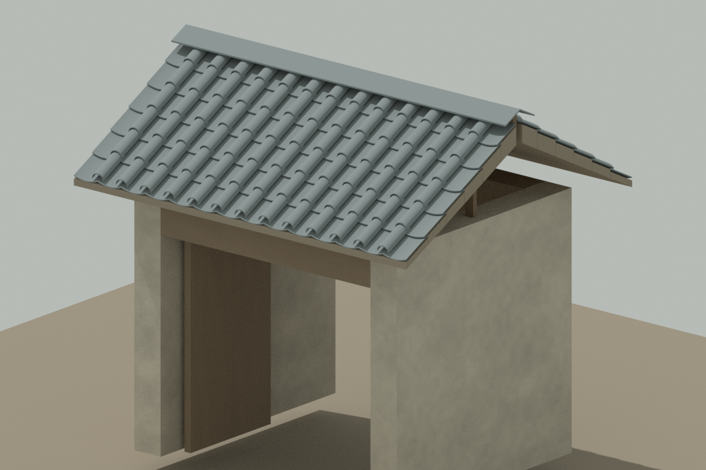

建筑 / 研究中 · 设计评审待完成
完整单门楼屋面研究
REALTIME MODEL模型研究 · 设计待评审

模型预览图 · 代表方案进入详情后仅加载所选模型。拖动旋转、双指或滚轮缩放；方向键旋转，＋/－缩放，R复位，Esc关闭。
原单门楼资产的局部原点契约验证：不新增模型、不改城市。三档共享同一地面中心，无二次减城市坐标。
坐标/原点：纠正早期条目：原GLB本来已局部化，原生成器已减城市527.5/807.85；不能再减一次。共享门楼地面中心原点，模型底约Y0.2，不逐LOD贴底。local-origin-v1只新增无缩放identity根及可逆placement契约。glTF +X东/+Y高/-Z北。
来源版本
单门楼完整屋面研究v0 + local-origin-v1
城市实际引用
未替换当前城市场景；不是广阳城门体量，同名“门”不可混用。
可复用范围与未解决项
旧门宽3.8×深3.1是源设计；新屋顶包络升高，非同包络替换。735接触候选保留，非穿插归零；构造、GPU未验。 新契约保留原二进制块/UV/法线/纹理；两位置平移与90度旋转有限往返，非任意变换证明。禁止镜像/非均匀缩放；无引擎验收，342网格未合批。
有限变体与版本
展开逐型参数、边界与限制
[
{
"name": "near",
"triangles": 32676,
"version": "local-origin-v1",
"sharedOrigin": true
},
{
"name": "middle",
"triangles": 17124,
"version": "local-origin-v1",
"sharedOrigin": true
},
{
"name": "far",
"triangles": 1148,
"version": "local-origin-v1",
"sharedOrigin": true
}
]实际资产文件
SHA可核验；独立GLB不自动执行城市补丁。完整原生源另有私有归档，本页不暴露内部ID或临时下载地址。
- 近景候选 · 2202404B
SHA256
8bf9b4160718fce58d0cd3ee75f447fd4b569d76973ce6c72014ecabc12d6dfa - 原门楼保留 · 1259992B
SHA256
506a7e863909444467599e7ba57114b29365ef430ed26e0ddaa159b09aec9435 - local-origin-v1 · near · 2202468B
SHA256
fcdfe870b7b7ee1ce878ae2c6b4d1b6c0add9b7a9ce3477b34efe42e1fca6a87 - local-origin-v1 · middle · 1640700B
SHA256
250fddbde01322a38e35bd537dba59284e81772830655ac6eff89cd176d07f67 - local-origin-v1 · far · 1260056B
SHA256
62ebf2fe6ab4bd8af8c4ab6c82c0390db8f1cd7135c8a51e519345da71a92210
坐标说明纠正与复核
早期库条目的[-3.5,-10.6]是源院落中的门楼锚点，不是导出GLB原点。原GLB已局部化，当前不二次平移。